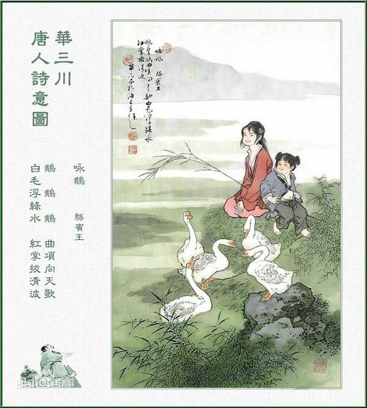

咏鹅
[唐] 骆宾王
鹅，鹅，鹅，曲项向天歌。
白毛浮绿水，红掌拨清波。
《咏鹅》是初唐诗人骆宾王于七岁时写的一首五言古诗。 这首诗开篇先声夺人，“鹅！鹅！鹅！”写出鹅的声响美，又通过“曲项”与“向天”、“白毛”与“绿水”、“红掌”与“清波”的对比写出鹅的线条美与色彩美，同时，“歌”、“浮”、“拨”等字又写出鹅的动态美，听觉与视觉、静态与动态、音声与色彩完美结合，将鹅的形神活现而出。
小时候的骆宾王，住在义乌县城北的一个小村子里。村外有一口池塘叫骆家塘。每到春天，塘边柳丝飘拂，池水清澈见底，水上鹅儿成群，景色格外迷人。有一天，家中来了一位客人。客人见他面容清秀，聪敏伶俐，就问他几个问题。骆宾王皆对答如流，使客人惊讶不已。骆宾王跟着客人走到骆家塘时，一群白鹅正在池塘里浮游，客人有意试试骆宾王，便指着鹅儿要他以鹅作诗，骆宾王略略思索便创作了此诗。
诗的第一句连用三个“鹅’字，这种反复咏唱方法的使用，表达了诗人对鹅的热爱，增强了感情上的效果。第二句写鹅鸣叫的神态，给人以声声入耳之感。鹅的声音高亢嘹亮，一个“曲”字，把鹅伸长脖子，而且仰头弯曲着嘎嘎嘎地朝天长鸣的形象写得十分生动。这句先写所见，再写所听，极有层次。以上是写鹅在陆地上行进中的情形，下面两句则写鹅群到水中悠然自得游泳的情形。小诗人用一组对偶句，着重从色彩方面来铺叙鹅群戏水的情况。鹅儿的毛是白的，而江水却是绿的，“白”“绿”对照，鲜明耀眼，这是当句对；同样，鹅掌是红的，而水波是青的，“红”“青”映衬，十分艳丽，这也是当句对。而两句中又“白”“红”相对，“绿”“青”相对，这是上下对。这样，回环往复，都是对仗，其妙无穷。
在这组对偶句中，动词的使用也恰到好处。“浮”字说明鹅儿在水中悠然自得，一动不动。“拨”字则说明鹅儿在水中用力划水，以致掀起了水波。这样，动静相生，写出了一种变化美。
